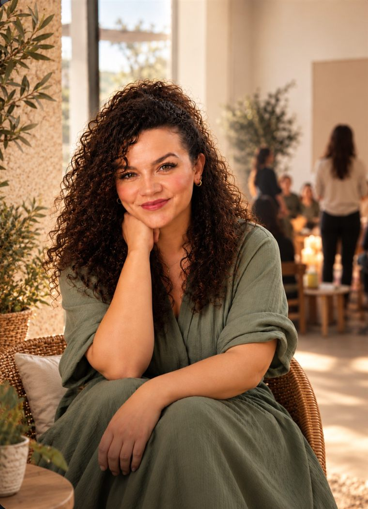

MYK Yaşam Koçu · Aile Dizimi Uygulayıcısı - İlişki ve Evlilik Koçu
Ailenizden gelen bir örüntüyü kendi hayatınızda tekrar ediyor gibi mi hissediyorsunuz?
Bireysel yaşam koçluğu, ilişki & evlilik koçluğu ve Aile Dizimi çalışmalarıyla; taşıdığınız aile örüntülerini görünür kılıp kendi hayatınıza dönüş yolculuğunuzda yanınızdayım.

“Bir aile dizimi, kelimelerin ulaşamadığı yeri gösterir: kimin nerede durduğunu, kimin unutulduğunu, sevginin nerede tıkandığını.”
Gönül İşginer Erciyes Kimdir?
Gönül İşginer Erciyes; MYK onaylı Yaşam Koçu, Kuantum Drama® Aile Dizimi Uygulayıcısı, İlişki ve Evlilik Koçu olarak çalışmalarını sürdürüyor.
Yaşam Koçluğu ve Kuantum Drama® Aile Dizimi eğitimlerini, Tuna Tüner'in mentorluğunda Türkiye Yaşam Bilimleri Enstitüsü'nde tamamladı. Mesleki yeterliliğini ise Mesleki Yeterlilik Kurumu (MYK) tarafından belirlenen ulusal standartlar doğrultusunda belgelendirerek Yaşam Koçu (Seviye 6) Mesleki Yeterlilik Belgesi aldı.
Bireysel ve çift çalışmalarının yanı sıra farklı şehirlerde düzenlediği grup çalışmalarıyla; yaşam koçluğu yaklaşımını, ilişkiler ve aile sistemi üzerine yürüttüğü çalışmalarla bir araya getirdi.
Üç Eksen: Birey · Aile Sistemi · Bilinç Düzeyi
Çalışmalarını üç eksen üzerine kuruyor: birey, aile sistemi ve bilinç düzeyi. Bireysel çalışmalarında hayata dair net kararlar alınmasını, aile dizimi çalışmalarında kuşaklar arası taşınan yüklerin görünür kılınmasını, ilişkilerdeki tekrar eden örüntülerin ise bilinç düzeyinde fark edilmesini hedefliyor.
Amaç; geçmişi suçlamak değil, ona saygıyla yer vererek bugünde daha hafif ve net durabilmek.
Hizmetler
Kişisel gelişim, ilişki dinamikleri ve aile sistemleri iç içe geçer — bu yüzden dört çalışma alanını tek bir bütün olarak yürütüyorum.
Hedeflerinizi netleştirdiğiniz, karar anlarında tıkandığınız yerleri birlikte çözdüğümüz birebir çalışmalar.
Çiftler için iletişim, güven ve yakınlık üzerine odaklanan, tekrar eden çatışma örüntülerini birlikte çözen çalışmalar.
Bireysel veya temsilcilerle yapılan dizim çalışmalarında aile sistemindeki görünmeyen bağları ve yükleri ele alıyoruz.
Farklı şehirlerde düzenlenen, sınırlı kontenjanlı Aile Dizimi atölyelerinde grup enerjisiyle derinleşen çalışmalar.
Nereden başlayacağınızdan emin değil misiniz? Kısa bir tanışma görüşmesiyle başlayalım.
Ücretsiz Ön Görüşme PlanlaAile Dizimi Nedir
Aile Dizimi; Bert Hellinger'in sistemik aile dizimi yaklaşımından temellenen ve Tuna Tüner tarafından Kuantum Drama® yaklaşımıyla geliştirilerek yapılandırılan bir farkındalık çalışmasıdır.
Kuantum Drama® Aile Dizimi'nde, kişinin ele aldığı konu; aile sistemi, ilişkiler ve kuşaklar arası bağlar çerçevesinde temsilciler aracılığıyla çalışılır. Amaç geçmişi değiştirmek ya da ailede bir suçlu aramak değil; kişinin bugün yaşamında tekrar eden bazı ilişki ve davranış örüntülerine farklı bir yerden bakabilmesine alan açmaktır.
Bu çalışma psikoterapi, psikolojik danışmanlık veya tıbbi tedavinin yerine geçmez; farkındalık ve kişisel gelişim amacıyla uygulanır.
Çalışma öncesi kısa bir görüşmeyle konunuzu ve dizimde ele almak istediğiniz soruyu birlikte netleştiriyoruz.
Temsilciler aracılığıyla aile sisteminizdeki konumlar, bağlar ve dışlanmış olabilecek üyeler alan içinde ortaya çıkar.
Çalışma sonrası görülenleri günlük hayata taşımak için birlikte kısa bir değerlendirme yapıyoruz.
Kısa Öz-Değerlendirme
Danışan Yorumları — Örnek
“Aylardır kafamda dönüp duran bir aile meselesini dizim çalışmasında ilk kez bu kadar net gördüm.”
Ö.K.
“Koçluk seanslarımız ilişkimizdeki tekrar eden tartışma kalıbını fark etmemizi sağladı.”
B. & S.
“Atölyeye sadece temsilci olarak katılmıştım, yine de kendi ailemle ilgili çok şey anladım.”
M.T.
“Karar veremediğim bir konuda kendimle birlikte net bir yol haritası çıkardık.”
D.Y.
“Çalışma sonrasında ailemle olan ilişkimde kendimi daha hafif hissediyorum.”
E.A.
Sık Sorulan Sorular
İlk adım her zaman kısa bir tanışma görüşmesidir. Buradan birlikte bireysel koçluk, çift çalışması ya da bir atölyeye katılımın size uygun olup olmadığına karar veririz.
Hem kendi konusuyla çalışmak isteyenler hem de sadece temsilci olarak alanda yer almak isteyenler atölyelere katılabilir.
Yaşam ve ilişki koçluğu günlük hayata dair hedef ve iletişim üzerine odaklanır; aile dizimi ise kuşaklar arası aktarılan örüntülere sistemik bir bakış sunar. Çoğu zaman ikisi birbirini tamamlar.
Hayır. Aile dizimi, danışmanlık ya da terapinin yerini almaz; onu tamamlayan bir farkındalık çalışmasıdır.
Instagram'dan
Gönül'ün Instagram hesabından paylaştığı videolar.
Aile dizimi çalışmasına dair kısa bir paylaşım.
Yaşam koçluğu üzerine bir düşünce.
İlişkilerdeki örüntüler üzerine bir paylaşım.
Atölye ve grup çalışmalarından bir kesit.
Ücretsiz Kaynak
Süreci, üç adımlı yöntemi ve kimler için uygun olduğunu anlatan kısa bir rehber. E-posta adresinize göndeririz.
Teşekkürler! Rehberi hemen görüntüleyebilirsiniz:
Rehberi Aç →Yaklaşan Atölye
Eylül ayında Çanakkale'de düzenlenecek grup atölyesi sınırlı kontenjanla ilerliyor. Kesin tarih, yer ve kayıt bilgisi için Instagram üzerinden ulaşabilirsiniz.
İletişim
Bireysel koçluk, çift çalışması ya da atölye başvurusu için en hızlı geri dönüş Instagram üzerinden. Mesajınızda kısaca konunuzu belirtmeniz yeterli.